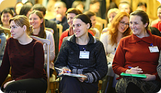

Обучение по-христиански 4+ Навчання по-християнськи 4+ Krikščioniškas mokymas 4+
Дистанционный курс профессионального развития христианских педагогов для повышения их эффективности в обучении и воспитании своих учеников Дістанційний курс профессійного розвитку християнських педагогів для підвищення їх ефективності в навчанні і вихованні своїх учнів Nuotolinio mokymosi kursas krikščionių mokytojams, skirtas veiksmingiau mokyti ir auklėti mokinius.
Тут буде заголовок
Тут треба розмістити текст, щоб користувач краще розумів що це за блок
Тут будет текст об этом курсе
Ви можете шукати відповіді на ці важливі питання разом із учителями, з якими працюєте кожного дня, и методисти МАРХО допоможуть вам у цьому за допомогою Інтернет-ресурсів
Курс дистанційного підвищення кваліфікації під назвою «Навчання по-християнськи 4+» був розроблений МАРХО як доповнення (не заміна) вашої професійної підготовки шкільного вчителя за допомогою розширення і поглиблення розуміння християнського підходу до освіти в цілому і викладання вашого предмета зокрема. Це допоможе поліпшити якість та ефективність не тільки вашого викладання, але й шкільного життя. Відкриваючи нові зв'язки між вашою вірою і професією, ви зможете знайти оновлення своєї життєвої мети як педагога і додаткову радість від щоденної участі в Божій праці!
На кожній із чотирьох сесій цього курсу вам буде запропоновано переглянути чотири знайомі вам сфери освітнього процесу в світлі біблійного світогляду і християнського бачення життя. Ці чотири області включають у себе:
- інтелектуальний розвиток;
- особистісний розвиток;
- розвиток взаємин;
- розвиток професійно-педагогічної діяльності.
Ви переглянете ці основні аспекти освіти в світлі істин, принципів і цінностей Святого Письма. Теми, що розглядаються в ході курсу, являють собою всього лише мінімум, необхідний для цілісного християнського підходу до викладання.
Оскільки в сфері освіти немає меж досконалості, ми сподіваємося, що наш курс стане для вас, принаймні, ініціатором вашої постійної самоосвіти!

Дистанційний курс 4+ для педагогів
Наші лектори
David Smith

Cara Parrett
David Smith